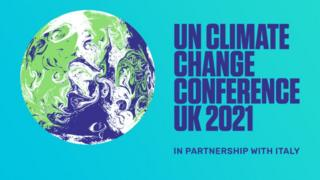

A rollercoaster fortnight
COP26 starts very soon, yes there will be testing. Over the past 3 weeks our team have been collaborating on and testing various digital service design proposals. The digital team typically found out about this requirement for event-testing over the weekend (from the news).
With the anticipation of many thousands of international arrivals coming to Glasgow very soon, the design team started cracking on with designing an ideal experience. Like rabbits in headlights, the team accepted the initial request to design, test, build and deploy an entirely new booking service - in under 2 weeks.
On second glance, and consulting the wider team, the team were doubtful if it was even possible. Risks were escalated to product owners, and the big bosses… after several discussions there was a decision to reuse all the things we already have. Phew I guess. Another team were voluntold-nicely to hurriedly redesign / make changes along several major user journeys.
(Internal dialogue) Here we go again I thought… baking more edge cases into the main user flows. We know that all these forms were designed for UK citizens, some journeys are optimised for NHS app users, however none of these journeys were designed to support international residents. We know this means that multiple pages like Name, Phone Number, Address, GP/Doctor registration, and many more would need both content and form validation changes.
Alongside the event, we knew we still need to fix a whole bunch of other problematic pages (designed around edge cases / or vague data requirements).
Our regular in-house recruiter was off on annual leave that week so I picked up organising all the recruitment. The plan was to interview a mix of people relevant to all the changes we were making. Some people who would be arriving through borders, some people who have travelled abroad recently and taken a private test, some people who live in Scotland, Wales and Northern Ireland and would be impacted by other regional changes.
We also did not want to interview retired people aged 50-70, savvy or expert internet users, and we have another tendency to steer away from interviewing too many white people; although these three previous factors make up the majority of users who join our panel. Within the UX community there is (rightly) a strong feeling that these groups are not representative of the wider population, communities and individuals with more diverse needs.
There are also access needs to consider too, we wanted to find people with limited English, or where English was their second language. Alongside this we want to find more users who have physical access needs, as we continue to explore the experience of users choosing a test site and to understand what access facilities they may need, and also to gather feedback on the physical accessibility of test kits. So it was complex recruitment brief to say the least. We dug deep into our panels and social networks/ Facebook groups, and found about 50 people of interest. 6 were booked for calls, but sadly only 3 turned up. Over the next day we resolved to do more, hastily reached another handful of users. Luckily in the next 2 days the team interviewed more users to add to the previous three.
Breathe and Pause for reflection.
There is nothing more intriguing and insightful than being an observer or assessor for an NHSX or GDS assessment panel.
Over the last few weeks I was lucky to get to do both of these. I’ve sat on the other side as lead researcher on multiple national programmes and I know it can be very stressful experience. Luckily, long gone are the days when service assessment panels had vast powers and could force big changes (like closing down ‘failing’ services). Assessments these days are more like peer-reviews with a non-exec board / expert team. While the feedback can still be fairly critical, it is provided as guidance for teams to improve. Assessments also provide assurance, connect dots and align services.
It was a tough week. The first assessment I observed had a strong emotive topic, and a lot of major issues came out through this process. In the end the service did not meet the criteria.
The second service, which I was user research assessor for struggled quite a bit too. The result wasn’t helped by the team not having a dedicated user researcher within their team throughout Discovery and Alpha. Despite this, the team had done loads of great work and I reflected hard on what feedback to provide, changing my recommendations several times over 5 days.
It felt like this particular team had been pressurised into continuing rapidly through a very short (3 week) discovery, with the plan to go straight into alpha and then a private-beta phase. There were some brilliant elements of work and collaboration across several complex organisations, but some aspects were problematic too. With some focussed effort I’m sure they could improve things quite quickly. The major issue from not having a researcher is that the team relied heavily on their own and partner organisations expertise. Lots of internal workshops, mapping out user journeys - but very limited qualitative research with end users.
At an alpha assessment, I would hope teams present some artefacts/slides (for about 20 minutes) talking about their users, the range of discovery activities conducted, and plans for the next stage. Hopefully concluding like Sherlock or Poirot with an ‘aha’ moment - identifying a clear problem statement to solve, sharing a set of (solution-agnostic) users needs, and a research plan to follow through alpha and Beta.
Unfortunately this didn’t happen and the team may need to go back round parts of the loop and do a bit more in-depth discovery and triangulation of insight, alongside continuing to work on ‘an important’ thing.
Hiring again
Lately there has been a lot of discussion about how hard it is to recruit and retain UX talent.
In my experience it hasn’t been too difficult, to find great people. The key factors being have a team with a clear mission, an effective processes for finding people, being inclusive of applications from all communities, providing new joiners with a great onboarding experience, being ongoing supportive, having the right tools and collaboration environments. Team work makes the dream work.
Another exciting thing this week was seeing the significant amount of interest in the number of applicants to NHSD perm-roles that are part of the latest UCD recruitment drive. As part of the sifting panel I reviewed over three-dozen applications. There were some really strong candidates, both internal and external; it goes to show that working in health (despite the pandemic) is still a major draw.
Looking after me
It’s been a difficult few weeks for me, reading all the media and press about ‘Plan B’, masking up, rising cases, hospitalisations and deaths. Having been on Covid Testing / Test and Trace since April 2020 to me it feels like I’ve seen and heard it all before.
Researchers and other scientists are saying the data shows that cases are going down, but we must remember that cases also went down everywhere just ahead of the previous summer, half-term and Easter holidays. Obviously a few weeks after that, when schools returned there were post-holiday outbreaks. Also earlier in the year in Cornwall the was another outbreak, although nothing to do with the large-scale events happening near July time. More outbreaks have occurred after everyone returns from international holidays in 2020 and 2021. Just because testing or cases numbers drop for a few days or weeks, doesn’t necessarily mean things are actually changing for the positive.
It might be getting better, or it might be getting a bit worse, it might also be about to get really quite a lot worse. We just don’t know yet. The data is always lagging a few days or weeks behind reality. The Zoe app data is currently showing the big outbreak spikes for some regions, being led by case rises in under 20s.
Behaviour changes can make a massive difference too. Lockdown and isolation is really really hard, I just did that for 10 days after being ill and some more days after with my kids were off school with Covid. I wouldn’t judge any parent who thinks, you know what I can’t afford to spend my 1 week half-term holiday locked inside with my kids. Despite there being massive outbreaks in primary and secondary schools mentally they may not feel able to stay inside, so in order to avoid testing positive they decide not to test as regularly, or only if symptomatic. The is quite an understandable and predictable albeit very short-term-focussed behaviour: being trapped inside is stressful, maybe they are lonely, people desire to see friends and family, or to be outdoors before winter kicks in.
The testing programme can encourage uptake by reducing barriers and further simplifying experiences, providing more support channels, etc. However, in the end acceptance/compliance with guidelines and individual personal responsibility and local community-driven health interventions can make bigger differences.
Covid attention and compliance is wearing pretty thin right now.
YouGov data shows 58% say that would wear a mask in public (was 76%, 39% avoid crowded places (was 80%).
ONS stats are slightly more optimistic, with 8 in 10 saying they wore a mask last week.
However this academic paper reviews many studies, and it shows that around 18% of symptomatic people isolated (pg17) during August, while only 12% of symptomatic people got a test (pg22).
Many tools for testing, tracing and isolation are already out there, either free or very much affordable right now - we know everyone is desperate for normality: but normality at what cost?
Getting really ill with long-covid can be just as traumatic and detrimental for patients, as for those who have been acutely unwell and hospitalised with Covid. I would love to get back to normal, and was feeling more confident that we were passed the latest peak. Then the next week so many stories went around about people who despite being vaccinated were getting long covid. That was really worrying to hear.
For policy it is a lose-lose situation right now too, either implement more measures/lockdown and the bustling economy takes a hit, or stay open and healthcare system and patients do. The NHS is already under pressure from all the delayed operations, etc, GPs report they are bursting with other physical and mental health problems from the first 2 waves - they can’t feasibly be checking out for everyone who may or may not have Covid too. We hear in the news that teachers in some areas are picking up additional health responsibilities, like testing; how is it sustainable, or ‘normal’?
Beyond the numbers going up and down as they do, we need services to be designed more empathetically and holistically - considering the entire care pathway.
Identifying appropriate measurable goals is really important too: 320 million tests is a very big and remarkable number but that is just another vanity metric - it only goes up: identifying symptomatic and positive people is a real measurable.
- Did the right people in the right places get tested?
- How many were missed?
“Trace is just another service/verb: isolating individuals and families that are contagious is the real goal/outcome.”
The billion dollar question is: How might we demonstrate if testing, tracing and isolation has had an significant impact on reducing the R-rate?
The latest PAC report is critical around the lack of evidence of effectiveness. It’s really depressing reading this for internal teams who have been working very hard, asking the important questions but yet being told to focus sits with other priorities.
All this has been weighing on me quite a lot lately, since the second lockdown it seems through regular context-switching we’ve missed the window of opportunity to reflect from the past and make things a lot better for citizens.
I’ve now stepped back from doing any frontline UR-deliver work, our research team has grown and new hires crack on with all the good stuff.
At the moment I focus on coordinating several research workstreams, cross-pollinating feedback and ideas, and playing the important unblocker-and-escalator role, alongside being an occasional narrator/historian/broken-record for the team.
April 2020 seems like a very very very long time ago. It’s been a long haul and I hope everyone is still doing well and finding a time to reflect too.